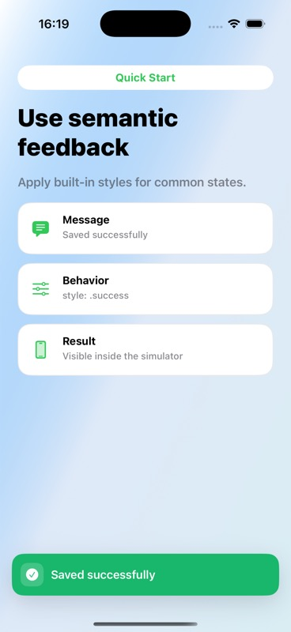

Quick Start
Use semantic feedback
Apply built-in styles for success, warning, error, info and loading states.
Code
let snackbar = TTGSnackbar( message: "Saved successfully", duration: .middle ) snackbar.style = .success snackbar.show()
